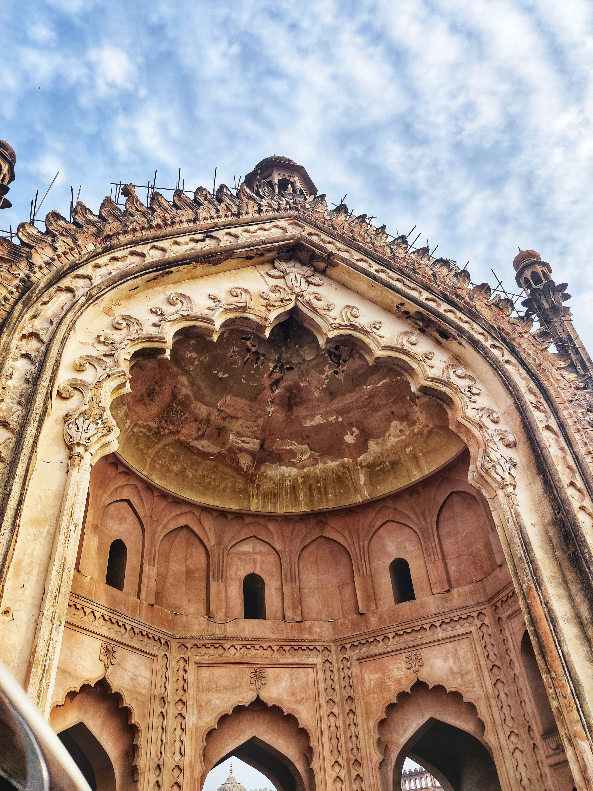
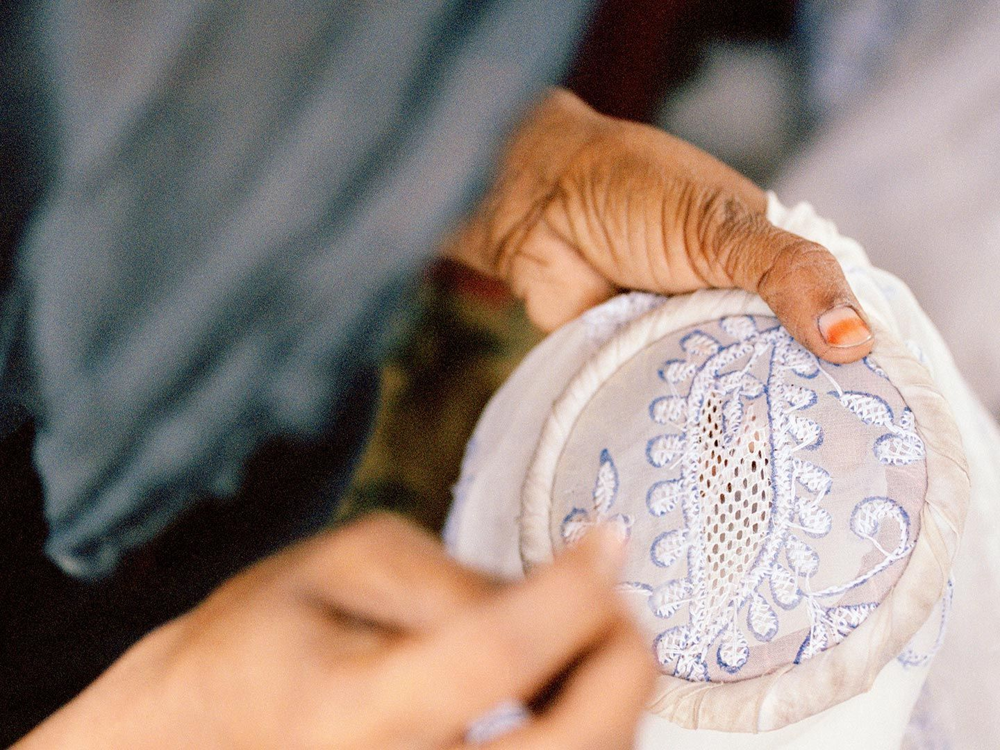

Top three actvites to do at Lucknow

Explore Bara Imambara & Rumi Darwaza
soak in the city’s grand Nawabi architecture and history.

Indulge in Awadhi cuisine
don’t miss Tunday Kababi, biryani, and traditional desserts.

Shop local crafts
Chikankari embroidery, ittar perfumes, and traditional handicrafts in old Lucknow.

Your guide
I’ve explored Lucknow inside out, and I’m passionate about guiding visitors through its history, culture, and hidden gems.